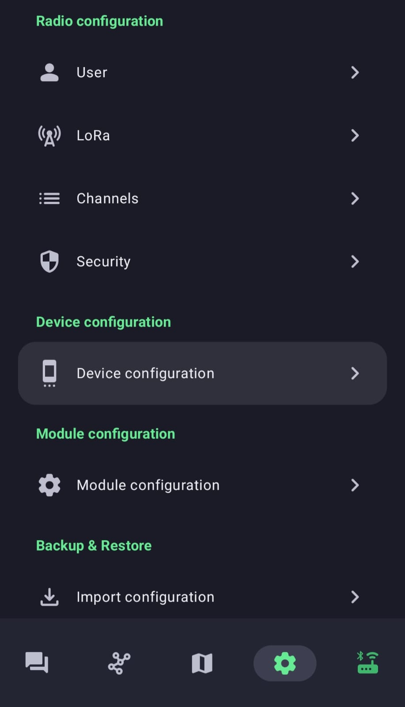
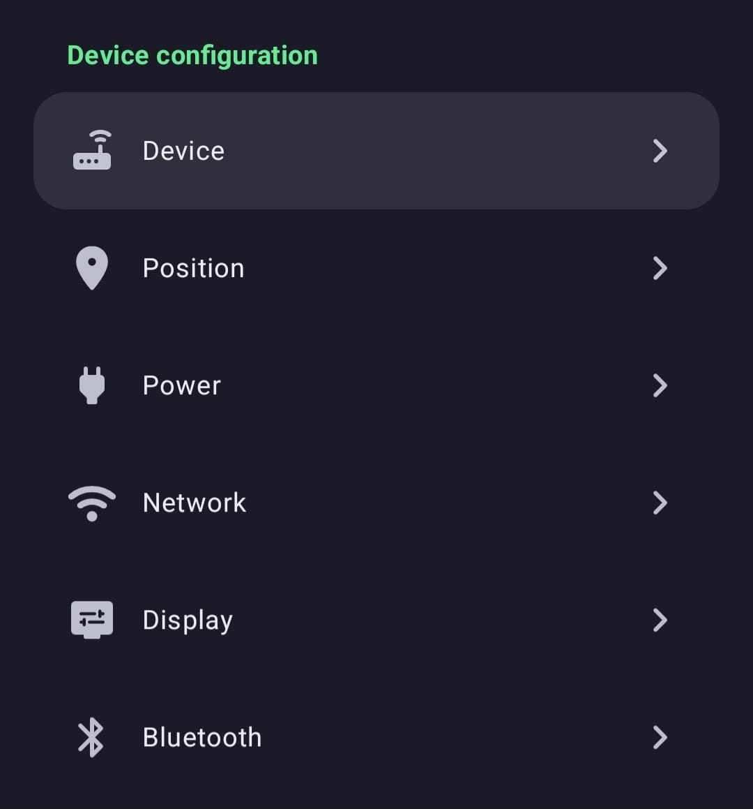
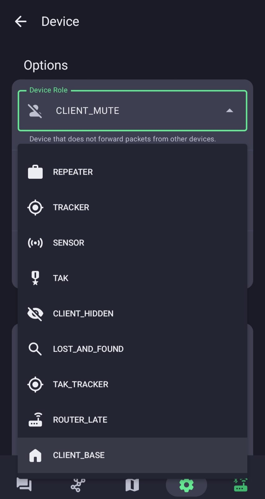
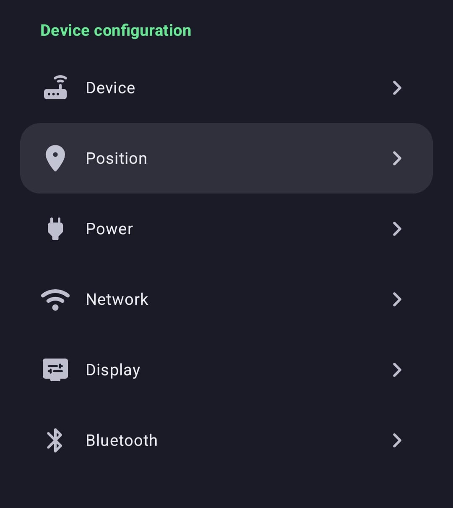
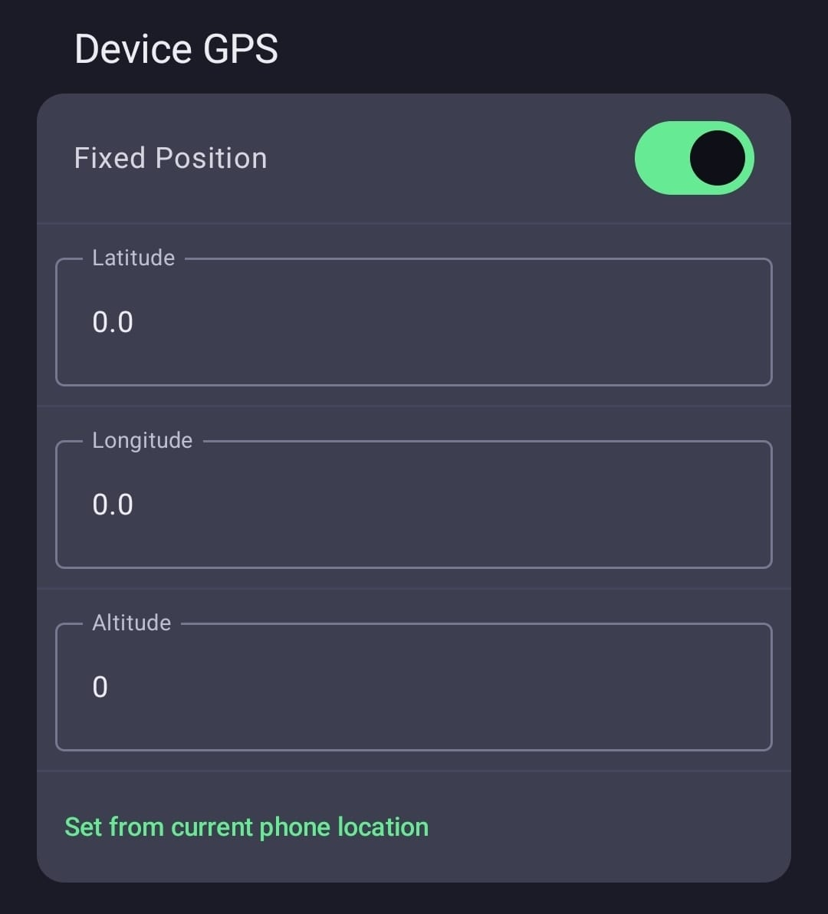
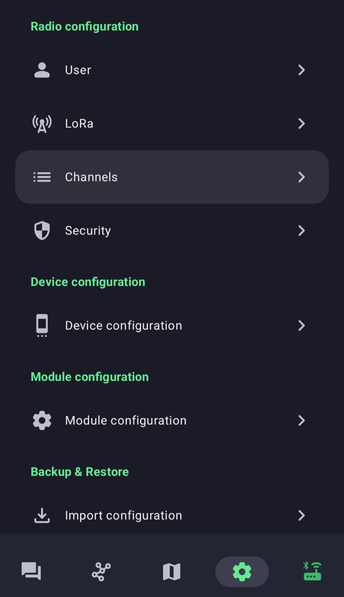
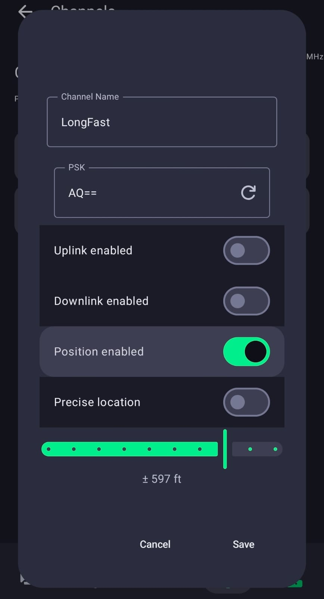

Infraestructura
Nodos fijos: lo que convierte un montón de radios sueltas en una red. Aquí está todo — qué hardware aguanta el clima de Panamá, cómo configurarlo, y cómo aparecer en el mapa sin publicar tu dirección.
Por qué esto importa más que nada
Una malla se muere de una forma muy específica: alguien compra su nodo con ilusión, lo enciende, no ve a nadie, y lo guarda en una gaveta para siempre.
Entre edificios, el alcance real son pocas calles. Con línea de vista limpia hemos llegado a 21.4 km, hasta Cerro Azul. Mismo equipo, misma potencia — lo único distinto era la altura. Eso es todo lo que un nodo fijo resuelve, y es todo lo que hace falta.
Dónde hacen falta, en Panamá
La zona de edificios — prioridad #1
Costa del Este, Punta Pacífica, Avenida Balboa, Obarrio, área bancaria. Es donde más gente hay y donde menos alcance tenemos. Un balcón en un piso 30 con vista al mar es, en la práctica, una torre de radio — y ya la estás pagando.
Cerros
Cerro Ancón domina la ciudad y la entrada del Canal. Cerro Azul cubre el este. Cerro Campana abre hacia el oeste. Uno solo de ellos cambiaría la malla entera.
Costa y mar
LoRa sobre agua rinde muchísimo. Un nodo mirando a la bahía cubre una superficie enorme sin obstáculos.
Torres existentes
Si eres radioaficionado y ya tienes torre, ya tienes lo más caro y lo más difícil. Hablemos.
¿Y si el mejor techo no es tuyo?
Casi nunca lo es — el piso 30 con vista al mar es de un edificio, no tuyo. No hace falta que lo sea: se le pide permiso al administrador. Tenemos una carta modelo lista para rellenar que explica en sencillo que el nodo no usa corriente del edificio, no necesita internet ni acceso frecuente, y es legal.
El hardware: ¿comprarlo listo o armarlo?
Las dos opciones son válidas. La pregunta real es cuánto tiempo quieres invertir y cuánta tolerancia tienes a que algo falle en un techo bajo la lluvia.
Comprarlo listo
En Panamá ya hay varios nodos solares SenseCAP de Seeed funcionando. Vienen armados: caja, panel, batería y radio, todo integrado y probado.
A favor: funciona el día uno. Sin sorpresas, sin soldar, sin cables raros.
En contra: más caro, y menos flexible si después quieres cambiar algo.
Si tu prioridad es que el nodo esté arriba y funcionando ya, esta es tu opción.
Armarlo tú
Más barato, más flexible, y honestamente más divertido. Pero tienes que acertar en varias cosas que no son obvias — y en el trópico los errores se pagan caro.
Todo lo que sigue en esta sección es para ti. Léelo completo antes de comprar nada, porque hay al menos tres cosas aquí que no se consiguen en Panamá y tienes que pedirlas junto con el nodo.
Si lo armas: primero elige el procesador
Esta es la decisión que define todo lo demás — el tamaño de la batería, el del panel, y si tu nodo sobrevive una semana nublada o no.
| nRF52840 | ESP32 | |
|---|---|---|
| Consumo | Muy bajo. Es su gran virtud. | Bastante más alto. |
| Batería y panel | Le basta con una batería pequeña y un panel pequeño. | Necesita batería grande y panel generoso. |
| Ahorro de energía | Nativo, no hace falta hacer nada. | Tiene modo de ahorro — actívalo, sin eso no sobrevive. |
| Ejemplos | RAK WisBlock, Heltec en versión nRF. | Heltec V3, LilyGO T-Beam / T-Supreme. |
| Veredicto | La mejor opción para un nodo solar. Si vas a dejarlo en un techo, ve por aquí. | Funciona con solar en Panamá — el sol nos sobra — pero dimensiona bien. |
El ESP32 sí sirve para solar, con cuidado
No lo descartes: en Panamá el sol es abundante y un ESP32 con modo de ahorro activado y una batería decente aguanta bien. Pero hay días de lluvia y semanas encapotadas, y ahí es donde se cae si le quedaste corto. Dimensiona para el peor mes, no para el promedio.
Batería: el calor manda
Usa celdas cilíndricas: 18650 o 21700
Mínimo 3000 mAh si vas con ESP32. Y por el calor que hace aquí, la recomendación es evitar las baterías tipo pouch (las LiPo planas y blanditas) en un nodo que va a vivir metido en una caja cerrada, al sol, todo el año.
Seamos precisos: no tenemos ningún caso reportado en Panamá de una batería que haya fallado así. Esto es una recomendación preventiva, no una alarma. Pero las celdas 18650 y 21700 tienen carcasa rígida y toleran mucho mejor el calor sostenido, y en un aparato que vas a dejar solo en un techo durante meses, esa diferencia vale la pena.
Panel solar: 5 V, no 6 V
Este error recalienta el nodo
Los nodos con entrada solar integrada no están hechos para paneles de 6 V. Con 6 V, el exceso de voltaje se disipa en forma de calor — y en un nodo cerrado, al sol, en el clima de Panamá, eso es justo lo último que quieres agregarle.
Usa paneles de 5 V. Si por lo que sea vas a usar uno de 6 V, necesitas un controlador MPPT en el medio. No lo conectes directo.
Lo que NO se consigue en Panamá
Esta es la parte que arruina proyectos. Léela antes de comprar, porque son cosas que tienes que pedir junto con el nodo o te vas a quedar varado.
Conectores JST PH y JST GH
Son los conectores que usan estos nodos para la batería y la entrada solar. Algunos nodos ya vienen con los cables incluidos; otros no.
En Panamá no se consiguen. En ningún lado.
Pídelos junto con el nodo. Y pide de sobra — son baratos, diminutos, y el día que te falte uno vas a tener el proyecto detenido semanas esperando un envío. Verifica bien si tu placa usa PH (paso 2.0 mm) o GH (paso 1.25 mm): no son intercambiables.
Cajas herméticas
Esto sí se consigue aquí: Electrónica Caribe tiene buena selección de cajas estancas. Busca IP65 como mínimo — nuestra lluvia entra por donde sea, y entra de lado. Y usa prensaestopas para pasar los cables: por donde entra el cable es por donde entra el agua.
Pigtails y conectores de antena
Suena a detalle menor. No lo es. Aquí es donde más problemas hemos tenido.
| Cable | Cómo es | Cuándo usarlo |
|---|---|---|
| RG178 | Más delgado y flexible. Más pérdida de señal. | Solo para tramos muy cortos, donde el espacio manda. |
| RG316 | Más grueso, más robusto. Bastante menos pérdida. | Es el que quieres en casi todos los casos, y sobre todo en un nodo fijo donde el cable va a quedar ahí durante años. |
Cuidado extremo con los conectores IPEX / u.FL
Son esos conectorcitos diminutos que van soldados a la placa. Son frágiles: están pensados para conectarse pocas veces, y si los jalas mal puedes arrancar la pista de la placa — y ahí ya no hay reparación fácil.
- Conéctalo una vez y déjalo quieto. Cada desconexión lo desgasta.
- Nunca jales del cable. Se desconecta tirando recto del conector, no del cable.
- Asegura el cable a la placa o a la caja para que no quede colgando y haciendo palanca.
Un aviso desde la experiencia
Hemos tenido problemas reales por cables malos. Un pigtail barato o mal terminado te arruina el alcance sin que te des cuenta — el nodo "funciona", pero llega a la mitad de lo que debería, y te vuelves loco buscando la falla en otro lado. No ahorres en el pigtail. Es la pieza más barata del nodo y la que más daño hace cuando falla.
Configuración · Paso 1: ponlo en CLIENT_BASE
Este es el rol correcto para un nodo fijo en altura. No es ROUTER, y la diferencia importa
mucho.
Qué hace CLIENT_BASE
Es el rol de estación base personal:
- Siempre retransmite los paquetes que vienen de — o van hacia — sus nodos favoritos.
- Con todo lo demás se comporta como un
CLIENTnormal: reenvía cuando hace falta, sin acaparar. - Es visible en la lista de nodos, así que la comunidad puede identificarlo.
- Mantiene Bluetooth activo — puedes seguir administrándolo desde el celular.
En corto: le da prioridad a tu gente sin hacerle daño al resto de la malla.
El truco está en los favoritos — sin ellos el rol no sirve de mucho
Un CLIENT_BASE solo prioriza a los nodos que marques como favoritos. Si
no marcas ninguno, se comporta prácticamente como un CLIENT cualquiera.
Así que marca como favoritos a los nodos cercanos: los tuyos, los de tus vecinos, los de la gente de tu zona que está encerrada en un primer piso y no llega a ningún lado. Para esos nodos, tu estación base se comporta como un router y siempre les retransmite. Ese es todo el punto.
Por qué NO ROUTER
ROUTER tiene prioridad de reenvío para todo el tráfico de la malla, no
solo para tus favoritos. Suena a que ayuda más — por eso tanta gente lo pone "por si acaso".
El problema: un ROUTER mal ubicado acapara reenvíos que le habrían tocado
a nodos mejor posicionados, y la malla entera empeora. Además apaga Bluetooth por defecto, así que
administrarlo se vuelve un dolor de cabeza.
Cómo cambiarlo
-
Abre la configuración y entra a Device configuration
Toca el engranaje abajo. Verás las secciones Radio configuration, Device configuration y Module configuration.

1. Engranaje → Device configuration. 
2. Toca Device, el primero de la lista. -
Abre Device Role y elige
CLIENT_BASEEstá en la lista desplegable. Vas a ver varios roles — ignora
REPEATER,TRACKER,SENSORy los de TAK. El tuyo esCLIENT_BASE, al final de la lista. El nodo se reinicia solo al guardar.
3. Device Role → CLIENT_BASE(abajo del todo). -
Marca tus nodos cercanos como favoritos
En la lista de nodos, mantén presionado un nodo y márcalo como favorito. Hazlo con los nodos de tu zona a los que quieras que tu estación base les dé prioridad. Sin esto, el rol no hace gran cosa.
Nota: REPEATER quedó deprecado
Si leíste guías viejas que recomendaban el rol REPEATER: quedó
deprecado a partir del firmware 2.7.11. No lo uses.
Paso 2 · Actívale la posición GPS fija
Si tu nodo no se va a mover, decírselo ahorra muchísima batería (puedes apagar el GPS del todo) y hace que aparezca en el mapa aunque ni siquiera tenga chip de GPS.
Primero, consigue tus coordenadas
1. Desde el celular
La app trae un botón “Set from current phone location” que rellena todo solo. Lo más rápido — siempre que estés parado junto al nodo.
2. Google Maps
Mantén presionado el punto exacto y copia latitud y longitud. Útil si quieres poner un punto que no es exactamente donde estás.
3. App GPS Test
Te da coordenadas y altitud con buena precisión. La mejor opción si te importa que la altura quede bien.
Ahora configúralo
-
Engranaje → Device configuration → Position
Es el segundo de la lista, con el ícono del pin de mapa.

Entra a Position. -
Activa Fixed Position y llena los campos
En la sección Device GPS, enciende el interruptor de Fixed Position. Se habilitan Latitude, Longitude y Altitude. Escríbelas a mano, o toca “Set from current phone location” para que las tome del celular.
No dejes la altitud en 0. Es el dato que le dice a la comunidad si tu nodo está en un piso 30 o a nivel de calle — y es justo lo que hace útil un mapa de cobertura. Ponla en metros.

Fixed Position encendido, y abajo el botón Set from current phone location. -
Apaga el GPS del nodo
Si el nodo tiene GPS integrado y ya no se va a mover, apágalo. Es de lo que más consume, y en un nodo solar puede ser la diferencia entre sobrevivir la temporada de lluvias o no.
Paso 3 · Decide cuánta ubicación quieres publicar
Aquí decides, a propósito, qué tanto se sabe de dónde está tu nodo. Y sí: puedes aparecer en el mapa sin publicar tu dirección exacta.
Ten claro lo que estás transmitiendo
El canal LongFast es público de verdad — su clave la conoce cualquiera.
Si tu nodo anuncia posición precisa ahí, cualquier persona con un nodo encendido puede ver
dónde está. Para un nodo en un techo eso suele dar igual. Para el nodo de tu casa, quizá no.
Decídelo a propósito, no por descuido.
-
Engranaje → Channels
Está arriba, en la sección Radio configuration.

Entra a Channels y abre el canal LongFast. -
Enciende Position enabled
Esto es lo que hace que tu nodo comparta su ubicación en ese canal. Si lo dejas apagado, tu nodo sigue funcionando y reenviando igual — simplemente no aparece en el mapa. Es una opción perfectamente válida.
-
Aquí está la clave: Precise location
Déjalo APAGADO si quieres ofuscar tu ubicación.
Al apagarlo se habilita un deslizador de precisión. Muévelo y vas a ver el margen de error que estás publicando — por ejemplo ± 597 ft. Mientras más a la izquierda, más difusa queda tu posición. Luego toca Save.

Position enabled encendido, Precise location apagado, y el deslizador definiendo el margen.
La receta que recomendamos
- Nodo en techo, cerro o torre: posición encendida, precisión alta. Ayuda a todos a entender la cobertura real y no revela nada sensible.
- Nodo en tu casa o apartamento: posición encendida pero Precise location apagado, con el deslizador en un margen que te deje tranquilo. Apareces como una mancha, no como una puerta.
- ¿No quieres publicar nada? Apaga Position enabled. Tu nodo sigue ayudando igual. Cuéntanos en privado la zona y lo ponemos como área.
Nuestro compromiso
Si nos escribes en privado para registrar un nodo, no publicamos coordenadas exactas sin tu permiso explícito. Preferimos mil veces tener tu nodo en el mapa como una mancha difusa que no tenerlo en absoluto.
Antenas de alta ganancia: baja la potencia
Aplica sobre todo a quien monta en torre
El PNAF de la ASEP permite hasta 6 dBi de ganancia de antena y un máximo de 36 dBm de PIRE. Las antenas de 8, 10 o 12 dBi superan ese límite de ganancia, y hay que compensar reduciendo la potencia del transmisor.
La cuenta: PIRE = potencia TX + ganancia de antena − pérdidas de cable, todo en dB. Ajusta la potencia TX en Device configuration → LoRa hasta quedar dentro. Ver la regulación completa →
¿Vas a montar uno?
Escríbenos antes de instalarlo. Te ayudamos a ver si tu punto realmente aporta cobertura donde falta, y a no repetir errores que ya cometimos — que son varios, y están casi todos en esta página. Estamos aquí →